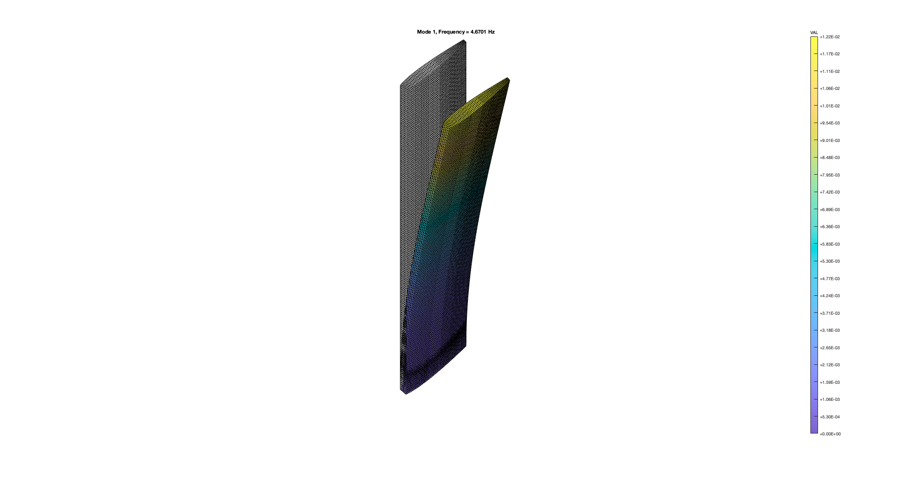
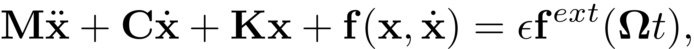
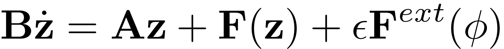
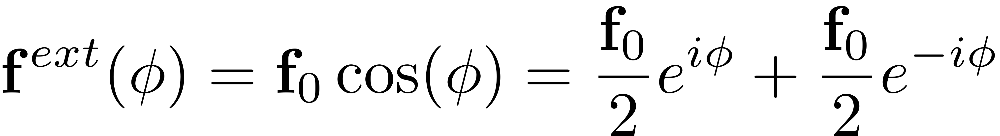
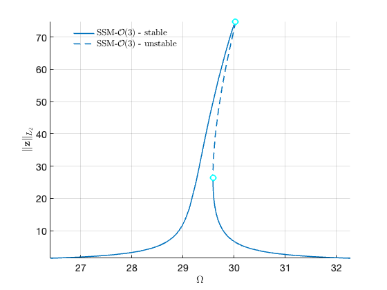
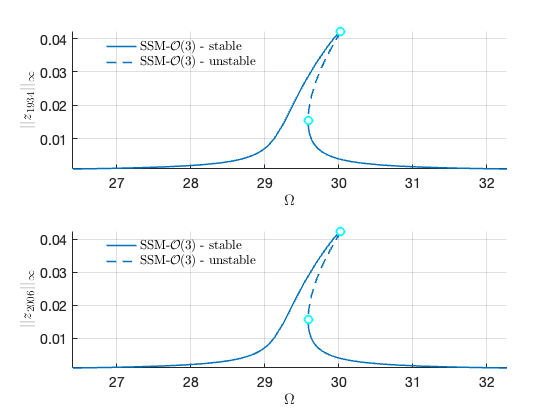

Contents
NACA airfoil wing model
Finite element model from the following reference:
Jain, S., Tiso, P., Rutzmoser, J. B., & Rixen, D. J. (2017). A quadratic manifold for model order reduction of nonlinear structural dynamics. Computers & Structures, 188, 80–94. https://doi.org/10.1016/J.COMPSTRUC.2017.04.005;

Finite element code taken from the following package:
Jain, S., Marconi, J., Tiso P. (2020). YetAnotherFEcode (Version v1.1). Zenodo. http://doi.org/10.5281/zenodo.4011282
clear all; close all; clc run ../../install.m % change to example directory exampleDir = fileparts(mfilename('fullpath')); cd(exampleDir)
System parameters
epsilon = 1;
Generate model
[M,C,K,fnl,f_0,outdof] = build_model(); n = length(M); disp(['Number of degrees of freedom = ' num2str(n)]) disp(['Phase space dimensionality = ' num2str(2*n)])
Reading mesh from Wing.msh Building FE model Assembling M,C,K matrices Applying boundary conditions Solving undamped eigenvalue problem Using Rayleigh damping Assembling external force vector Getting nonlinearity coefficients Loaded tensors from storage Total time spent on model assembly = 01:20:42 Number of degrees of freedom = 133920 Phase space dimensionality = 267840
Dynamical system setup
We consider the forced system

which can be written in the first-order form as


where
![$\mathbf{z}=\left[\begin{array}{c}\mathbf{x}\\\dot{\mathbf{x}}\end{array}\right],\quad\mathbf{A}=\left[\begin{array}{cc}-\mathbf{K} & \mathbf{0}\\\mathbf{0} & \mathbf{M}\end{array}\right],\mathbf{B}=\left[\begin{array}{cc}\mathbf{C} & \mathbf{M}\\\mathbf{M} & \mathbf{0}\end{array}\right],\quad\quad\mathbf{F}(\mathbf{z})=\left[\begin{array}{c}\mathbf{-\mathbf{f}(\mathbf{x},\dot{\mathbf{x}})}\\\mathbf{0}\end{array}\right],\quad\mathbf{F}^{ext}(\mathbf{z},\mathbf{\phi})=\left[\begin{array}{c}\mathbf{f}^{ext}(\mathbf{\phi})\\\mathbf{0}\end{array}\right]$](NACAWing_eq02065934477452524807-Rescaled.png) .
.
DS = DynamicalSystem(); set(DS,'M',M,'C',C,'K',K,'fnl',fnl); set(DS.Options,'Emax',5,'Nmax',10,'notation','multiindex') % set(DS.Options,'Emax',5,'Nmax',10,'notation','tensor')
We assume periodic forcing of the form

Fourier coefficients of Forcing
kappas = [-1; 1]; coeffs = [f_0 f_0]/2; DS.add_forcing(coeffs, kappas,epsilon);
Linear Modal analysis and SSM setup
[V,D,W] = DS.linear_spectral_analysis();
Due to high-dimensionality, we compute only the first 5 eigenvalues with the smallest magnitude. These would also be used to compute the spectral quotients Assuming a proportional damping hypthesis with symmetric matrices modal damping ratio for 1 mode is 2.000000e-03 modal damping ratio for 2 mode is 2.000000e-03 modal damping ratio for 3 mode is 2.264041e-03 modal damping ratio for 4 mode is 3.612822e-03 modal damping ratio for 5 mode is 5.538531e-03 the left eigenvectors may be incorrect in case of asymmetry of matrices The first 10 nonzero eigenvalues are given as 1.0e+02 * -0.0006 + 0.2934i -0.0006 - 0.2934i -0.0030 + 1.5226i -0.0030 - 1.5226i -0.0041 + 1.8088i -0.0041 - 1.8088i -0.0113 + 3.1381i -0.0113 - 3.1381i -0.0274 + 4.9385i -0.0274 - 4.9385i
Choose Master subspace (perform resonance analysis)
S = SSM(DS); set(S.Options, 'reltol', 0.1,'notation','multiindex') % set(S.Options, 'reltol', 0.1,'notation','tensor') masterModes = [1,2]; S.choose_E(masterModes);
No (near) outer resonances detected in the (truncated) spectrum
sigma_out = 46
(near) inner resonance detected for the following combination of master eigenvalues
2 1
3 2
4 3
5 4
1 2
2 3
3 4
4 5
These are in resonance with the follwing eigenvalues of the master subspace
-0.0587 +29.3428i
-0.0587 +29.3428i
-0.0587 +29.3428i
-0.0587 +29.3428i
-0.0587 -29.3428i
-0.0587 -29.3428i
-0.0587 -29.3428i
-0.0587 -29.3428i
sigma_in = 46
Forced response curves using SSMs
Obtaining forced response curve in reduced-polar coordinate
order = 3; % Approximation order
setup options
set(S.Options, 'reltol', 1,'IRtol',0.02,'notation', 'multiindex','contribNonAuto',false) set(S.FRCOptions, 'nt', 2^7, 'nRho', 200, 'nPar', 200, 'nPsi', 100, 'rhoScale', 2 ) % set(S.FRCOptions, 'method','level set') set(S.FRCOptions, 'method','continuation ep', 'z0', 1e-4*[1; 1]) set(S.FRCOptions, 'outdof',outdof)
choose frequency range around the first natural frequency
omega0 = imag(S.E.spectrum(1)); omegaRange = omega0*[0.9 1.1];
extract forced response curve
FRC = S.extract_FRC('freq',omegaRange,order); figFRC = gcf;
*****************************************
Calculating FRC using SSM with master subspace: [1 2]
(near) outer resonance detected for the following combination of master eigenvalues
5 0
6 0
6 1
7 1
7 2
8 2
0 5
0 6
1 6
1 7
2 7
2 8
6 0
7 0
7 1
8 1
8 2
0 6
0 7
1 7
1 8
2 8
10 0
0 10
These are in resonance with the follwing eigenvalues of the slave subspace
1.0e+02 *
-0.0030 + 1.5226i
-0.0030 + 1.5226i
-0.0030 + 1.5226i
-0.0030 + 1.5226i
-0.0030 + 1.5226i
-0.0030 + 1.5226i
-0.0030 - 1.5226i
-0.0030 - 1.5226i
-0.0030 - 1.5226i
-0.0030 - 1.5226i
-0.0030 - 1.5226i
-0.0030 - 1.5226i
-0.0041 + 1.8088i
-0.0041 + 1.8088i
-0.0041 + 1.8088i
-0.0041 + 1.8088i
-0.0041 + 1.8088i
-0.0041 - 1.8088i
-0.0041 - 1.8088i
-0.0041 - 1.8088i
-0.0041 - 1.8088i
-0.0041 - 1.8088i
-0.0113 + 3.1381i
-0.0113 - 3.1381i
sigma_out = 46
(near) inner resonance detected for the following combination of master eigenvalues
2 1
3 2
4 3
5 4
1 2
2 3
3 4
4 5
These are in resonance with the follwing eigenvalues of the master subspace
-0.0587 +29.3428i
-0.0587 +29.3428i
-0.0587 +29.3428i
-0.0587 +29.3428i
-0.0587 -29.3428i
-0.0587 -29.3428i
-0.0587 -29.3428i
-0.0587 -29.3428i
sigma_in = 46
Due to (near) outer resonance, the exisitence of the manifold is questionable and the underlying computation may suffer.
Attempting manifold computation
Manifold computation time at order 2 = 00:00:55
Estimated memory usage at order 2 = 1.34E+03 MB
Manifold computation time at order 3 = 00:01:25
Estimated memory usage at order 3 = 1.41E+03 MB
Run='freqSubint1.ep': Continue equilibria along primary branch.
STEP DAMPING NORMS COMPUTATION TIMES
IT SIT GAMMA ||d|| ||f|| ||U|| F(x) DF(x) SOLVE
0 2.20e-02 4.17e+01 0.0 0.0 0.0
1 1 1.00e+00 9.81e-02 1.11e-04 4.17e+01 0.0 0.0 0.0
2 1 1.00e+00 1.11e-03 5.03e-08 4.17e+01 0.0 0.0 0.0
3 1 1.00e+00 1.76e-07 8.94e-16 4.17e+01 0.0 0.0 0.0
STEP TIME ||U|| LABEL TYPE om rho1 th1 eps
0 00:00:00 4.1699e+01 1 EP 2.9343e+01 7.5891e-01 2.7048e+00 1.0000e+00
10 00:00:00 4.0892e+01 2 2.8745e+01 1.7384e-01 3.0448e+00 1.0000e+00
20 00:00:00 3.7621e+01 3 EP 2.6409e+01 3.5977e-02 3.1216e+00 1.0000e+00
STEP TIME ||U|| LABEL TYPE om rho1 th1 eps
0 00:00:00 4.1699e+01 4 EP 2.9343e+01 7.5891e-01 2.7048e+00 1.0000e+00
10 00:00:00 4.2598e+01 5 3.0015e+01 1.7602e+00 1.6752e+00 1.0000e+00
14 00:00:01 4.2608e+01 6 SN 3.0030e+01 1.7677e+00 1.5257e+00 1.0000e+00
14 00:00:01 4.2608e+01 7 FP 3.0030e+01 1.7677e+00 1.5257e+00 1.0000e+00
20 00:00:01 4.2526e+01 8 2.9988e+01 1.6911e+00 1.2674e+00 1.0000e+00
30 00:00:01 4.1867e+01 9 FP 2.9587e+01 6.3674e-01 3.6253e-01 1.0000e+00
30 00:00:01 4.1867e+01 10 SN 2.9587e+01 6.3669e-01 3.6250e-01 1.0000e+00
30 00:00:01 4.1867e+01 11 2.9587e+01 6.3417e-01 3.6099e-01 1.0000e+00
40 00:00:01 4.2110e+01 12 2.9766e+01 2.5553e-01 1.4254e-01 1.0000e+00
50 00:00:01 4.3589e+01 13 3.0814e+01 7.1783e-02 3.9905e-02 1.0000e+00
55 00:00:01 4.5658e+01 14 EP 3.2277e+01 3.5984e-02 1.9999e-02 1.0000e+00
Total time spent on FRC computation upto O(3) = 00:03:24
 